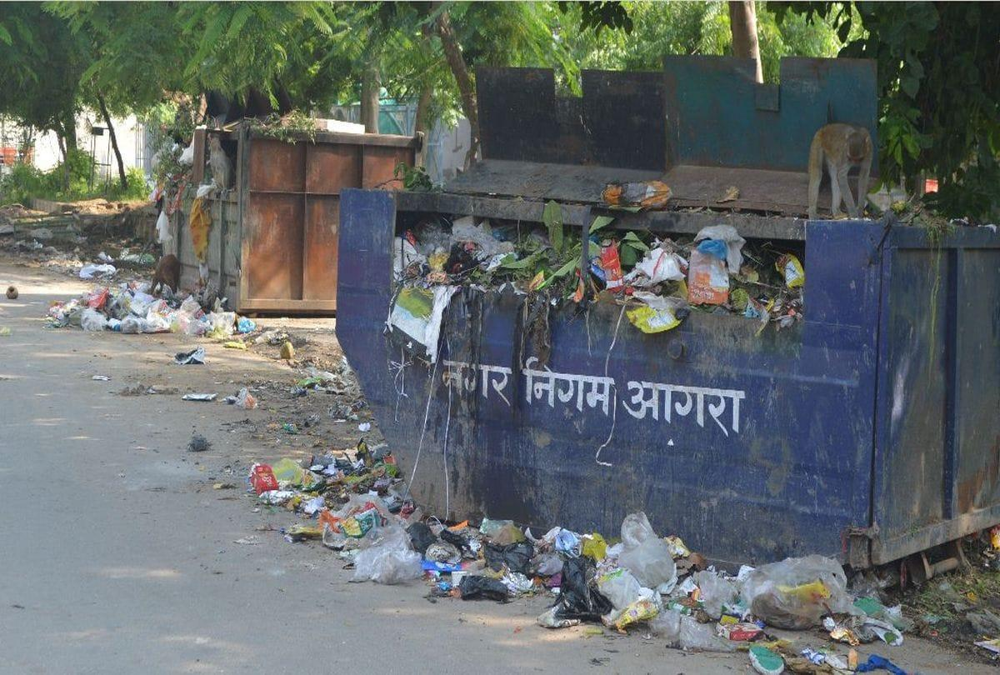
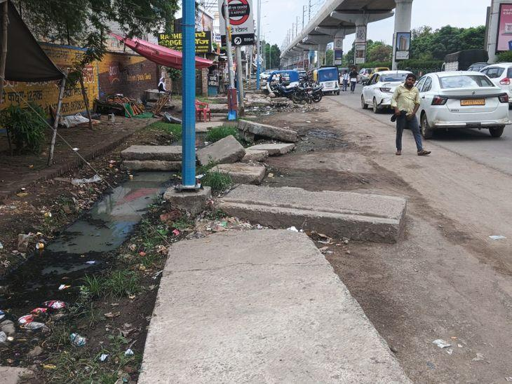
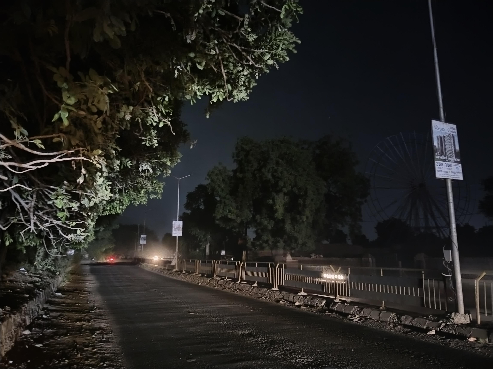
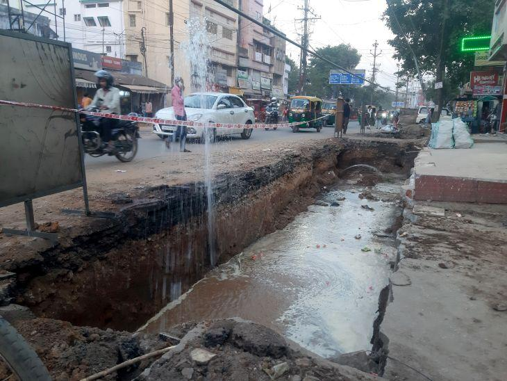
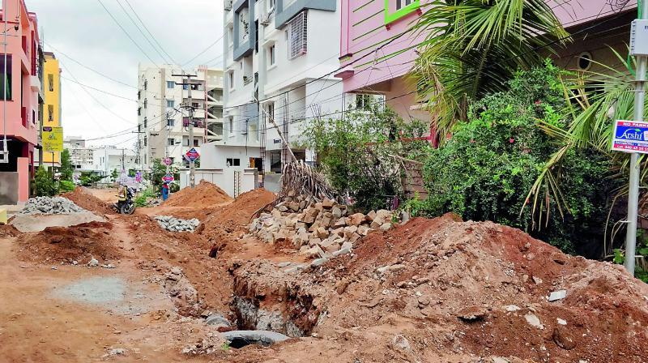

High
In progress
⌖ Sector 14, Ward 9 · 3 hours ago
Severe pothole cluster near Sector 14 market
#NS-1842 · Potholes
See nearby issues reported by citizens, supported reports that affect you, and track transparent progress from reported to resolved.
Showing reports within 5 km of Sector 14 · sorted by "affects me" votes
#NS-1842 · Potholes

#NS-1839 · Garbage

#NS-1831 · Open sewer

#NS-1820 · Streetlight

#NS-1811 · Water supply

#NS-1804 · Road damage